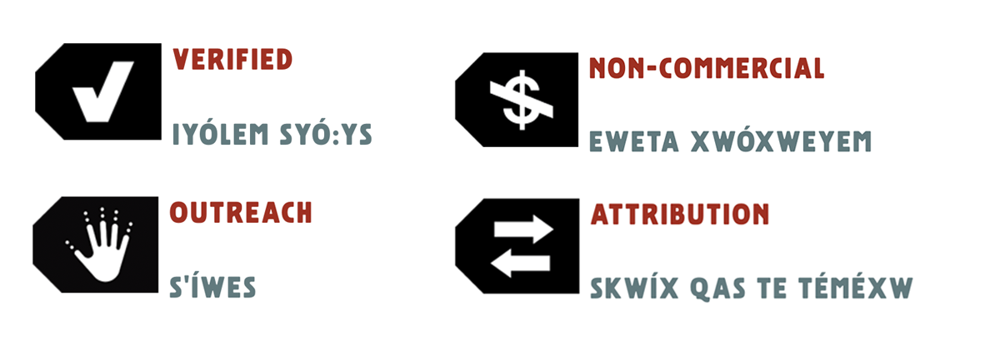

Chicago
Bautista, Grace. “Indigenous Data Sovereignty and Open Access in Museums.” In The State of Museum Digital Practice | 2022: A collection of graduate essays, by Alyssa Barilotti,
Samantha Bateman,
Grace Bautista,
et al.
Washington, D.C.: GWU Museum Studies, 2022. https://GWU-Museum-Studies.github.io/Museum-Digital-Practice-2022/essays/essay-1/.
MLA
Bautista, Grace. “Indigenous Data Sovereignty and Open Access in Museums.” The State of Museum Digital Practice | 2022: A collection of graduate essays, by
Alyssa Barilotti, et al.
GWU Museum Studies, 2022. https://GWU-Museum-Studies.github.io/Museum-Digital-Practice-2022/essays/essay-1/. Accessed DD Mon. YYYY.
I. Indigenous Data Sovereignty and Open Access in Museums
Grace Bautista, The George Washington University
We live in a world where data that once only existed in dusty boxes in museums are now being brought out and digitized and made widely available, including data that includes our traditional knowledge and our stories about ourselves.1–Dr. Tahu Kukutai
(Ngati Tiipa, Ngati Kinohaku, Te Aupouri), founding member of the Maori Data Sovereignty Network Te Mana Raraunga and the Global Indigenous Data Alliance
With the internet at our fingertips, data is everywhere. From DNA sequences used in genetic research to social media feeds tailor-made for every user, data can shape our perceptions. It allows us to examine our past and predict our future. Data is now a valuable resource, with the ability to purchase data or use it to build open access resources. Museums, libraries, archives, and galleries worldwide hold online data repositories, often found in collections metadata. These institutions, too, are swept up in an ongoing dialogue over open access data. In this project, open access data refers to open cultural data, as explored by digital humanities scholar Mia Ridge. Ridge defines cultural data as “objects, publications […] archival material” and more “created and distributed by museums, libraries, archives and other organisations.”2 More broadly, data can also include “different types of content, from metadata or tombstone records […] to entire collection records” and even digitized versions of this content or “digital surrogates,” as Ridge labels.3 Open access data is, in essence, “content that is available for use outside the institution that created it” mainly through “licences that clarify the permissions and restrictions placed on data.”4
This project seeks to address the benefit of open access resources while understanding the harm it can inflict on Indigenous communities. Indigenous data encompasses the intangible and tangible cultural materials and knowledge of Indigenous peoples. Online repositories in cultural institutions often contain significant gaps in their data, as scholar and Te Kotahi Research Institute Director, Maui Hudson (Whakatōhea), explained during a presentation for eCampusOntario’s Open Education Week 2022. Hudson contends that Indigenous names, places, and provenance information are often missing from online collections.5 Mistakes and gaps in physical records are also absorbed into the metadata.6 Copyright law can further complicate matters by limiting Indigenous communities from owning the rights to their knowledge, which this project explores later.
Hudson and other scholars are part of a growing movement to promote Indigenous data sovereignty. Miranda Belarde-Lewis (Zuni/Tlingit), an independent curator and assistant professor of North American Indigenous Knowledge at the University of Washington, describes the concept of data sovereignty in the context of cultural heritage as the ability “to inform the practices of record-keeping systems” which occur in cultural institutions.7 Reclaiming and recontextualizing this data can constitute “a vital act of sovereignty.”8 She argues that “tribal information is part of our sovereignty” and by working to change practices of record-keeping systems, “we are asserting our treaty rights, we are asserting our right to self-determine how we handle our own information, our own data gathering, and also the data that’s been gathered about us."9 Belarde-Lewis’ affirmation of data sovereignty as a tool of empowerment provides insight into the importance of Indigenous data sovereignty as a crucial consideration for museums re-examining their relationships with tribal source communities. This project will explore how the field of museums and cultural institutions—specifically in the United States, despite much of the most visible discussion generated in non-US institutions—has responded to and created solutions for issues surrounding Indigenous data sovereignty. These solutions demonstrate how the field must incorporate Indigenous data sovereignty into online collections as a core component of moving toward a decolonized, 21st-century museum.
Colonizing Knowledge
To understand Indigenous data sovereignty, we must first examine the knowledge and traditional data of Indigenous communities. Desi Rodriguez-Lonebear (Northern Cheyenne and Chicana), professor of sociology and American Indian studies and co-founder of the US Indigenous Data Sovereignty Network, argues that Indigenous people have gathered data for centuries.10 “Contrary to colonial narratives of savagery and unsophistication,” Rodriguez-Lonebear says, “Indigenous peoples were relentlessly empirical with advanced systems of knowledge.”11 Rodriguez-Lonebear cites examples of Plains Indians, such as the Lakota and Blackfeet tribes, who used hides to record winter counts.12 These records included “numbers of tribal citizens, allies, enemies, wild game, lodges” and other significant tribal data.13 Rodriguez-Lonebear also cites Pacific Northwestern totem poles as methods of record-keeping; totem poles documented “everything from family histories and tribal origin stories to achievements, marriages and land rights.”14 Lastly, Rodriguez-Lonebear examines her tribe, the Northern Cheyenne, and their record-keeping practices. The Northern Cheyenne’s strong oral history tradition passed knowledge down through generations and still impacts tribal decisions today.15 As data sources, oral histories challenge “the idea of data as products of modernity with little relevance to Indigenous lived experiences or traditions.”16 In short, Indigenous data and data gathering have long informed Indigenous knowledge and traditions.
Despite numerous Indigenous record-keeping practices, museums and other cultural institutions remain “ongoing settler-colonial projects” in which “the dispossession of homelands runs hand in hand with dispossession of knowledge.”17 Citing Eve Tuck and K. Wayne Yang’s “Decolonization is not a metaphor,” scholars Jane Anderson and Kimberly Christen discuss how settler colonialism distorts human relationships with the land into one between property and owner.18 They argue that the “process of remaking relationships to land has subsequent consequences where relationships to knowledge are also made through property’s lens.”19 Because Indigenous data is viewed through the lens of property available for settler colonial institutions to claim ownership over, the colonization of knowledge persists with modern data issues.
Recent issues with open access and copyright laws threaten Indigenous communities and their data. In 2018, the United States passed the Music Modernization Act, which sought to change copyright laws regarding recordings made before 1972.20 The new law developed a system to pay royalties to artists to “find and compensate artists whose music was recorded before 1972 whenever their work is streamed online today.”21 However, if artists cannot be located, the Act opens up the possibility of increased public access to ethnographic sound recordings.22 These recordings could include ritual performances and oral histories from Indigenous communities that would become open for public access for non-commercial purposes.23 The American Indian Policy Institute (AIPI) of Arizona State University weighed the risk that likely “hundreds of thousands of sound recordings were made on Tribal lands between the advent of sound recording in the late 1800s until 1972.”24 These recordings, many of which are held in museums, may have been captured by members of Indigenous nations. However, “a substantial volume were made by anthropologists, missionaries, tourists” and others who recorded events, songs, and practices which may be sensitive and sacred.25
As museums and cultural institutions digitize and publicize these recordings, they can subvert Indigenous ownership through the non-commercial exception of the new copyright law, thereby avoiding copyright violations. Similar to physical objects in museums, these recordings may also lack information due to poor documentation.26 AIPI points to missing details such as “the names of performers, the date of recording, the specific location where the recording was made, or agreements as to who would own the rights to the recordings” if the recorder even considered such an agreement “necessary.”27 Furthermore, recorders may not have explained their intended use for the recorded materials, meaning “numerous tribes and tribal members have no idea what recordings exist, including ones that may have deep personal and cultural value.”28
The Case for Digital Repatriation: The Passamaquoddy Tribe
In 1890, American anthropologist, Jesse Walter Fewkes, passed through the Passamaquoddy Tribe (in what is now eastern Maine) on his way to study the Hopi and Zuni people. Fewkes stopped to document the “remnants of the Passamaquoddy” through an Edison phonograph, culminating in over thirty wax cylinder recordings of Passamaquoddy songs, chants, and stories.29 The cylinders captured sacred knowledge as well as “precious audio of people’s grandmothers and grandfathers, in a language that was becoming more endangered with each passing year.”30 Members of the Passamaquoddy Tribe did not have access to these recordings previously held in the Harvard Peabody Museum.31 The Library of Congress later obtained the cylinders and began working with the Passamaquoddy to digitize the cylinders and engage in the digital repatriation process. The digital repatriation process, in this instance, involved returning authority and ownership to the Passamaquoddy for the “digital files, metadata, and documentation” of the recordings.32
Kim Christen and Jane Anderson describe these repatriation discussions, noting their experience hearing the recordings—specifically, the Passamaquoddy “Trading Song”—for the first time with members of the Tribe:
What started as listening quickly became singing by elder Gracie Davis. Then another person joined in. Then many, young and old […] For the rest of the morning we listened to that one two-minute song over and over, verse by verse […] That day, the songs from the cylinder were reconnected into community practices—knowledge exchange, language instruction, historical education, and so on. This was only a beginning. (Anderson and Christen, 113-114)
Christen and Anderson later heard from Passamaquoddy Tribe members that the recordings had been used in listening sessions with community members, resulting in more “words, phrases, and beats that they were defining and using in language classes, and younger children who did not speak the language were using the beats to create new songs.”33 The digital repatriation of these recordings helped the Passamaquoddy Tribe assert their ownership over their cultural knowledge. Current and future generations can learn and reclaim their language. It also brought Passamaquoddy ancestors out of the shadow of Fewkes’ ownership, as the listening sessions helped clarify the singers and others who participated in the recordings—rather than the subjects of the recordings, they are co-authors.34 Now, the Library of Congress website hosts the digital recordings of the cylinders while giving proper attribution to the Passamaquoddy Tribe through Traditional Knowledge (TK) labels, a subject discussed later in this project. As Christen and Anderson explain, these labels and repatriating the recordings are only the beginning. “Redefining attribution through Passamaquoddy cultural authority,” they say, “initiates the unraveling of settler-colonial structures of property possession exerted over Indigenous knowledge.”35 The Passamaquoddy recordings serve as an example for museums and cultural institutions to decolonize their data and assert Indigenous data sovereignty.
Indigenous Data Sovereignty in Practice: TK Labels
As Indigenous communities have struggled to gain legal ownership of their data, several digital tools have emerged from Indigenous scholars, museum professionals, and others to expand Indigenous ownership over data. One example is Local Contexts’ Traditional Knowledge (TK) label system. Local Contexts, co-founded by Jane Anderson and Kim Christen in 2010, follows in the footsteps of organizations such as Mukurtu CMS. Also founded by Christen, Mukurtu works similarly with tribal organizations as an access portal for digital collections. The open-source software also works to implement TK labels and cultural protocols. While Mukurtu focuses on building a digital platform, Local Contexts emphasizes the role of Indigenous governance frameworks. These frameworks and the TK label system aid in “determining ownership, access, and culturally appropriate conditions” for sharing collections of Indigenous knowledge.36
TK labels draw on the concepts of Creative Commons and IP labels to “recognize the cultural authority” of Indigenous groups alongside legal recognitions.37 As Local Contexts co-founder Jane Anderson explains, “as non-legal rights holders, you can’t have a license over [data held in cultural institutions], you can’t exert any control.”38 The project began over ten years ago. Now, Local Contexts has developed twenty TK labels reflecting cultural protocols and Indigenous sharing expectations.39 Every community can customize TK labels to convey certain attributes, including their own languages. Local Contexts has three main types of labels: provenance labels, protocol labels, and permission labels. Provenance labels, as Anderson explains, ask us to consider “where does Indigenous knowledge come from?” while “putting Indigenous names back in the record.”40 They can also specify various community or family relationships regarding the sharing of information, such as the Family Label (TK F), indicating knowledge only shared between family members.41Protocol labels vary widely—the seasonal label, for instance, can be used to designate knowledge that should only be shared during a certain time of the year (such as after the first snowfall).42 These labels can also describe the protocols around sharing information based on gender, family, or culturally sensitive knowledge.43 The final category of permissions labels describes “the different kinds of permissions communities would like in relationship to sharing their material,” such as opening material to commercialization (or restricting it to community use).44
The Sq’éwlets Virtual Museum is one example of an Indigenous community using TK labels. The Sq’éwlets First Nation, located in present-day British Columbia, use their virtual museum to share “our journey from ancient times to the present” through their digital collections.45 Visitors are invited to view á:wkw’ (“belongings”) related to plant harvesting, fishing, building, dwelling, and caring for ancestors, among other belongings. The Sq’éwlets use TK labels in several instances, notably regarding their secret and sacred objects.

ExpandFigure 5These TK labels denoting attribution, non-commercial use, outreach, and verification also include a custom name, as well as an audio file of the Halq’eméylem translation.
Christen and Anderson affirm that the act of attribution makes visible what has been erased by settler colonialism, as well as Indigenous survivance.46 Indigenous survivance is a concept that scholar Gerald Vizenor (Chippewa) defines as “an active sense of presence over absence, deracination, and oblivion.”47 It is “the continuance of stories” which are themselves “renunciations of dominance.”48 Museums and other cultural institutions should consider using TK labels—whether through Local Contexts or another system—to put the power of attribution and cultural authority back into the hands of Indigenous communities, thus strengthening and promoting Indigenous survivance.
Applying the CARE Principles to Museums and Cultural Institutions
While tools such as TK labels have created avenues for Indigenous data sovereignty, open access still threatens Indigenous knowledge. Indigenous nations may feel a tension between protecting this data and supporting open data-sharing initiatives.49 To resolve some of this tension, the International Indigenous Data Sovereignty Interest Group50 was formed to create the CARE Principles for Indigenous Data Governance, beginning with workshops in 2018.51 The principles of CARE stand for “Collective Benefit, Authority to Control, Responsibility, and Ethics” and were developed with the guidance of scholars, organizations, and Indigenous peoples themselves.52 Rather than centering data, CARE Principles emphasize a people-first approach. These principles also further define Indigenous data, which can include information about the land, Indigenous people (through administrative, census, and other means), and Indigenous people’s traditional and cultural knowledge.53
ExpandFigure 6The CARE principles for Indigenous Data Governance (Carroll et al. 2020)
Several concepts support the core CARE Principles. The first principle denotes how “Indigenous data must facilitate collective benefit for Indigenous Peoples to achieve inclusive development and innovation, improve governance and citizen engagement, and realize equitable outcomes.”54 Under the collective benefit principle, data reflects community values and puts data in the hands of Indigenous people. Further emphasizing this is the principle of Indigenous people’s authority to control data through data governance, which necessitates access to the data and involvement in stewardship decisions.55 The third principle of responsibility urges data stewards to “nurture respectful relationships” with their Indigenous source communities.56 Lastly, CARE’s ethics principle states that these concepts are not possible without the “representation and participation of Indigenous Peoples, who must be the ones to assess benefits, harms, and potential future uses based on community values and ethics.”57 In other words, the ethical principle exists to minimize harm to Indigenous communities.
Several organizations have moved to adopt the CARE Principles, including the Research Data Alliance, the Open Data Charter, and the Smithsonian Institution.58 While the Smithsonian does not cite the CARE Principles directly in their Open Access Initiative Values statement, their Open Access FAQ page and values statement echoes the core sentiments of the CARE Principles. One significant aspect of the Open Access initiative is that assets deemed “culturally sensitive” are not available for open access.59 While Smithsonian does not define the term “culturally sensitive,” the Institution does state they “[respect] the rights and sovereignty of the diverse cultures Smithsonian collections represent,” adding that the Smithsonian “engages with these communities about the use of these assets, so culturally sensitive content may not be Open Access now or in the future.”60
Despite the Smithsonian’s willingness to publicize physical repatriation efforts—which are notably visible at the National Museum of the American Indian—the CARE Principles are difficult to uncover when searching for information on Smithsonian’s digital collections management. To move towards a more decolonized framework, museums must not only commit to stewarding Indigenous data with respect, but communicate how their practices will nurture respectful relationships, recognize authority, and minimize harm toward Indigenous communities. Ultimately, the CARE Principles lay out the ethical groundwork for digital repatriation and TK labels as museums and cultural institutions develop open access resources.
The Path Forward
Outside of the United States, Indigenous data networks have sought to address the issue of data sovereignty. Groups in Aotearoa/New Zealand, Australia, and Canada have generated much of the visible guidance and collaborated through the global Research Data Alliance. These networks have informed the practices of data scholars in the US, such as the US Indigenous Data Sovereignty Network launched by Carroll and Rodriguez-Lonebear in 2016. These data scholars created recommendations for both Indigenous and non-Indigenous stakeholders to advance data sovereignty in the US. Stakeholders in museums and cultural institutions should consider at least three of the many recommendations. First, museums should promote the “adoption and implementation of common principles of Indigenous data governance by tribes” and other organizations, such as the CARE Principles.61 Second, museums must “establish data governance mechanisms that non-tribal governments, organizations, corporations, and researchers can use to support Indigenous data sovereignty.”62 This could mean engaging in digital repatriation or working with source communities to create TK labels. Lastly, it is imperative that museums “share strategies, resources, and best practices” while investing in “Indigenous professionals and community members who are skilled at creating, collecting, and managing data” or “data warriors.”63 Creating a transparent and collaborative process for data sovereignty will ultimately help museums form relationships with Indigenous communities and facilitate more equitable decision-making processes.
The issue of data sovereignty goes beyond data stored in digital collections and back to the museum as an ongoing settler colonial project. Museums hold vast quantities of Indigenous knowledge and remove the authority of Indigenous authors and knowledge-holders to uphold settler colonialism. Policies such as residential schooling and forced assimilation also upheld settler colonialism as they “sought to erase Indigenous knowledge and forced many tribes to rely on external sources of information about their communities’ economic, environmental, and health status.”64 Moreover, museums are still culpable for the remains of many Indigenous peoples held in their collections which illustrates “the ultimate theft of Indigenous peoples’ data: their bodies.”65 Policies such as the Native American Graves Protection and Repatriation Act (1990) regulate the return of human remains, funerary objects, sacred objects, and objects of cultural patrimony to Native American and Native Hawaiian groups. But NAGPRA’s regulations guiding museums only apply to physical objects and remains. Despite NAGPRA—and NAGPRA’s recently-proposed changes—policy guiding Indigenous data governance remains lacking.
Conclusion
It is difficult to deny the benefits provided by open access resources to museums and their publics. With over 4.5 million Open Access objects in the Smithsonian alone, creating open digital collections erodes the barriers between visitors and the knowledge stewarded by museums. However, the advantages of open access cannot justify further harming Indigenous communities. Museums must recognize the emerging role of data sovereignty as they grapple with physical repatriation and decolonizing initiatives.
Museum scholars have argued that the museum cannot be decolonized.66 This is a crucial perspective as museums reconcile with the violent colonial history of their physical locations, objects, and data. Each of these aspects can perpetuate colonialism. However, with emerging tools such as TK labels, digital repatriation, and frameworks such as the CARE Principles, museums have the opportunity to assert Indigenous cultural authority over Indigenous knowledge. This process may not decolonize the museum, but it is one step to avoid further harm and move toward healing. Rather than excluding Indigenous voices—thus perpetuating a cycle of dependence on museums to learn one’s own cultural knowledge—museums can collaborate with Indigenous people and ensure better stewardship for all.
Reed, Trevor. “The Music Modernization Act and Its Impact on Tribal Interests.” American Indian Policy Institute. Tempe, AZ: Arizona State University, February 20, 2019. 1. ↩︎
Carroll, Stephanie Russo, Ibrahim Garba, Oscar L. Figueroa-Rodríguez, Jarita Holbrook, Raymond Lovett, Simeon Materechera, Mark Parsons, et al. “The CARE Principles for Indigenous Data Governance.” Data Science Journal 19 (November 4, 2020): 43. https://doi.org/10.5334/dsj-2020-043. 1. ↩︎
This group was formed within the Research Data Alliance as a network of Indigenous data sovereignty networks and individuals, including many of the scholars cited in this project. ↩︎
Carroll et al., “The CARE Principles for Indigenous Data Governance,” 3. ↩︎
Carroll, Stephanie Russo, Desi Rodriguez-Lonebear, and Andrew Martinez. “Indigenous Data Governance: Strategies from United States Native Nations.” Data Science Journal 18, no. 1 (July 8, 2019): 31. https://doi.org/10.5334/dsj-2019-031. 11. ↩︎
Figure 4